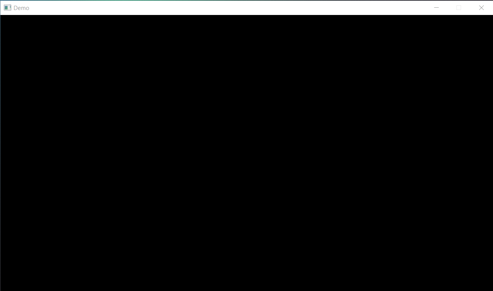
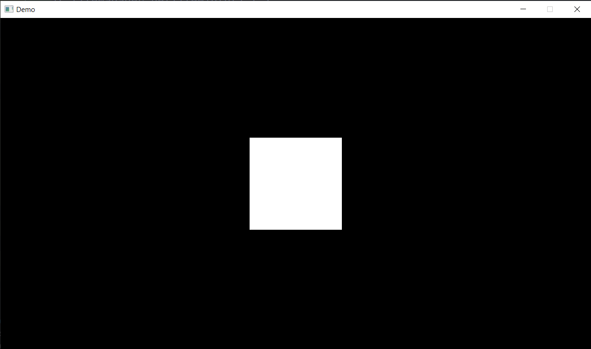

Cloud 2D Game Library
What is Cloud?
Cloud is a simple 2D game library written in Java. It's using LWJGL under the hood for features like drawing or getting user input.
What can be done?
Cloud is currently still in early alpha but there can already be done a lot.
Here you can find the demos page with various demo applications.
What is included?
- 2D Physics Engine
- The physics engine used is Box2D.
- Particle System
- A powerful particle system with a simple API
- (Still in Alpha)
- Font renderer
- Allows rendering simple text
- Custom fonts can be easily added and used
- Rendering utilities
- A simple API that allows drawing rectangles, circles or other polygons with ease.
- Utility functions for drawing
- UI System
- HTML/CSS like API
- Different Layouts
- UI Components
Things soon to be added
- Batch rendering
- Batch rendering will soon be added to improve the performance of the engine when drawing multiple thousand polygons
- Tileset Support
- Automatic tileset slicing (Alreay implemented)
- Autotile
- Gridmanager
- Level Builder
- Easy way to build game worlds
- Gizmos
- Easy debug of colliders or other invisible components
Current issues
There are currently some problems on MacOS operating system because of the usage of the Java AWT classes. A fix for this will be implemented in a future release by replacing AWT class functionality with the LWJGL STB classes.
If you found a bug or have any other problems please oepn an issue here.
How can I get started?
First you have to download the compiled jar file, or clone the repository.
Then add the jar file to your projects class path, or import the cloned repository.
public static void main(String[] args) {
// Create a new window with a size of 1280x720
Window window = new Window(1280, 720, "Demo");
// Enable vsync
window.useVsync(true);
// Show the window and start the game loop
try {
window.show();
} catch (Exception e) {
e.printStackTrace();
}
}
When you run your application a window with the specified resolution should appear.
Currently there will be a blank black screen. That's because we currently don't have a scene set where content could be drawn.
To change that we will create a scene and add it to the window.
Create a new class, it will extends the Scene class from the engine. This will be the place where your content will be drawn.
package de.kostari.demo;
import de.kostari.cloud.core.scene.Scene;
import de.kostari.cloud.core.window.Window;
public class MainScene extends Scene {
public MainScene(Window window) {
super(window);
}
}
Now you just have to add it to the window at your window variable.
window.setScene(YOUR_CLASS_NAME.class);
When you start your application now nothing seems to be changed, but now we can draw content to the window.
In your scene class add a draw method and draw a rectangle to the screen using the Render utility class.
@Override
public void draw(float delta) {
Render.rect(window.getHalfSize(), 100, 100, CColor.WHITE);
super.draw(delta);
}
If everything worked and you did everything correctly you should see a white rectangle in the center of your window.
If you want to learn more go head to the wiki here.
Supported Platforms
Here you can see where Cloud is supported, if your platform is not listed, Cloud may not support it.
Known to work
- Windows 10 (64-bit)
- Windows 11 (64-bit)
WINDOWS-NOTE: Cloud has not been tested on 32-bit operating systems, therefore it is not officially supported and likely never will.
- MacOS
MACOS-NOTE: Cloud is known to work on MacOS operating systems, but there can be some hickups when using some functionality because of the usage of Javas AWT classes.
Unknown
- Windows 7 (32- and 64-bit)
- Linux Based Operating Systems
NOTE: Cloud may work on this platforms but it has not been tested!
Supported Editors
Cloud is exported as an jar file, therefore it is supported in all text editos if added to the class path correctly.
Personal suggestions:
Building the library
Cloud is simple to build and modify. You can download a precompiled binary from the release pages here.
If you want to compile the binary yourself or want to modify the library follow these steps:
Needed tools
You should also download an IDE, here are some suggestions:
Downloading the source
Assuming everything is installed correctly you can proceed with the following:
- Clone the repository:
git clone https://github.com/iotacb/cloud.git - Open your folder which contains the cloned code in your IDE/editor
- Add the libary to the classpath (Google on how to do it with your IDE/editor)
That's it, now you can customize it to your liking. If you want to compile the library you should google how to do it with your IDE/editor as this is different depending on the used software.
Pulling code
The master branch of the libary repository will always be a stable release. If you want beta releases of future features you can pull the latest release from the beta branch
Your first app
To create your first app, you just have to create a window variable in your main function like this:
// Your program will start here
public static void main(String[] args) {
// Create a window with the tile 'Demo' and a size of 1280 pixels by 720 pixels
Window window = new Window(1280, 720, "Demo");
}
If you run your code now nothing will happen because the window won't be shown and the game loop has not been started.
To change this and add some other options to the window
call the show method of the window like this:
public static void main(String[] args) {
// Create a window with the tile 'Demo' and a size of 1280 pixels by 720 pixels
Window window = new Window(1280, 720, "Demo");
// Enable vsync
window.useVsync(true);
// Show the window and start the game loop
try {
window.show();
} catch (Exception e) {
e.printStackTrace();
}
}
If you run your code now it still won't work because the window needs an default scene.
What a scene exaclty is will be explained later.
To fix it we have to create a new class which extends the Scene class.
public class YOUR_SCENE_NAME extends Scene {
public YOUR_SCENE_NAME(Window window) {
super(window);
}
}
Now add the class to the window like this
public static void main(String[] args) {
Window window = new Window(1280, 720, "Demo");
window.useVsync(true);
// Set the scene
window.setScene(YOU_CLASS_NAME.class);
try {
window.show();
} catch (Exception e) {
e.printStackTrace();
}
}
Finally if you run your code and everything works correctly a black window should appear on your screen.

Drawing simple shapes
To demonstrate the drawing API we will use the First App that we created here and draw some simple shapes.
In your scene create a draw(float delta) function like this
public class YOUR_SCENE_NAME extends Scene {
public YOUR_SCENE_NAME(Window window) {
super(window);
}
@Override
public void draw(float delta) {
// If you want to draw something to the screen
// you should always do it in the draw function
// of your current scene
super.draw(delta);
}
}
Let's draw a rectangle in the center of the screen
public class YOUR_SCENE_NAME extends Scene {
public YOUR_SCENE_NAME(Window window) {
super(window);
}
@Override
public void draw(float delta) {
// Call the 'rect' function in the 'Render' class
// to draw a simple rectangle to the screen
Render.rect(getWindow().getHalfSize(), 200, 200);
super.draw(delta);
}
}

Listening for input
To demonstrate the input API we will use the First App that we created here and listen for keyboard input.
In your scene create a update(float delta) function like this
public class YOUR_SCENE_NAME extends Scene {
public YOUR_SCENE_NAME(Window window) {
super(window);
}
@Override
public void update(float delta) {
// If your want to listen for user input
// you should always do it ib the update function
// of your current scene or gameobject
super.update(delta);
}
}
Let's print a message when we press the space key
public class YOUR_SCENE_NAME extends Scene {
public YOUR_SCENE_NAME(Window window) {
super(window);
}
@Override
public void update(float delta) {
if (Input.keyPressed(Keys.KEY_SPACE)) {
System.out.println("We just pressed the spacebar!");
}
super.update(delta);
}
}
When we now run the code and press the space bar, the message We just pressed the spacebar! should be printed in the console.
There are different functions to listen for input. You can read more about it here